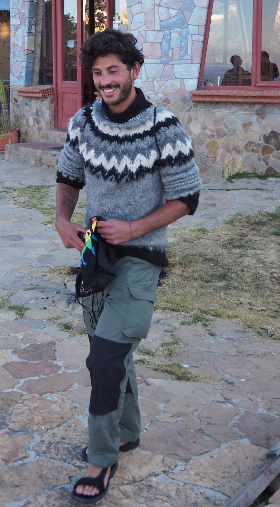

About

Hi! I’m Lorenzo and I’m a third-year PhD student at BARC, University of Copenhagen. I’m fortunate to be advised by Mikkel Thorup and Mikkel Abrahamsen.
I am broadly interested in Theoretical Computer Science, with a particular emphasis on sublinear algorithms and algorithms for (geo)metric problems.
I’m looking for a job! Please, reach out if you wanna hire me for a PostDoc (Full CV).
Papers
-
Multi-Swap k-Means++. Lorenzo Beretta, Vincent Cohen-Addad, Silvio Lattanzi, Nikos Parotsidis. Submitted.
-
Locally Uniform Hashing. Ioana Bercea, Lorenzo Beretta, Jonas Klausen, Jakob Bæk Tejs Houen and Mikkel Thorup. FOCS 2023.
-
Online Sorting and Translational Packing of Convex Polygons. Anders Aamand, Mikkel Abrahamsen, Lorenzo Beretta and Linda Kleist. SODA 2023. arXiv.
-
Better Sum Estimation via Weighted Sampling. Lorenzo Beretta and Jakub Tetek. SODA 2022. Best Student Paper Award. arXiv.
-
Online Packing to Minimize Area or Perimeter. Mikkel Abrahamsen and Lorenzo Beretta. SoCG 2021. arXiv.
-
An Optimal Algorithm to Find Champions of Tournament Graphs. Lorenzo Beretta, Franco Maria Nardini, Roberto Trani and Rossano Venturini. IEEE Transactions on Knowledge and Data Engineering (TKDE). arXiv.
Miscellanea
- Three things that I enojoy: Pesto Lasagna, Mountain Biking and TCS <3